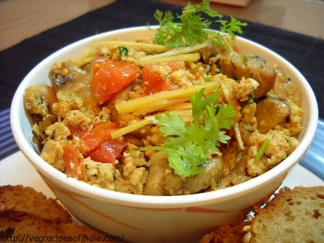
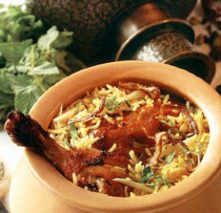

FAMOUS AWADHI DISHES ARE:-
 DHINGRI DOLMA MUSHROOM PANEER
DHINGRI DOLMA MUSHROOM PANEER
BHOOKARS RATINGS:-


It is the famous dish of awadh as it is prepared with mushroom and panneer.It is the spiciest of all the dishes present here and is the best way to make your child eat all the vegetables on his plate!
WHERE TO EAT- YUKANZA PALACE (LUCKNOW)
 Dum PHUKT
Dum PHUKT
BHOOKARS RATINGS:-


It is a famous vegetaranian dish and is served in a HANDI to preserve its taste and give it a nice presentation.Although it is healthy because of all the vegetbles, you will probably see an increase in your weight! :P
WHERE TO EAT- JAIN RESTAURANT (ALLAHABAD)
BHOOKARS RATINGS:-


It is a dish which can only be made during the springs as anardana is available at that time .This dish is so famous that during that time the lucknow hawkers are almost earning more than a they earn the whole year..
WHERE TO EAT- JAIN RESTAURANT (LUCKNOW)